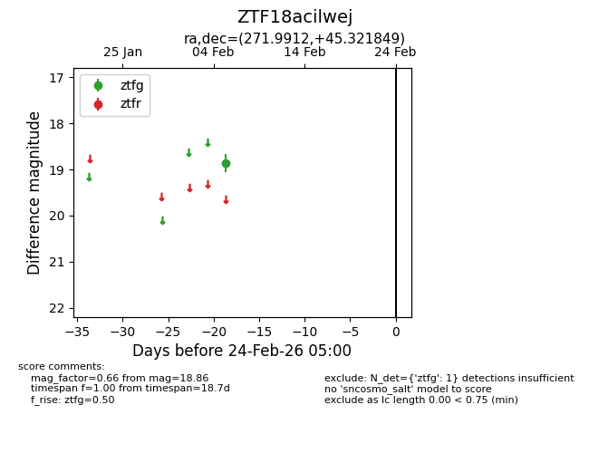
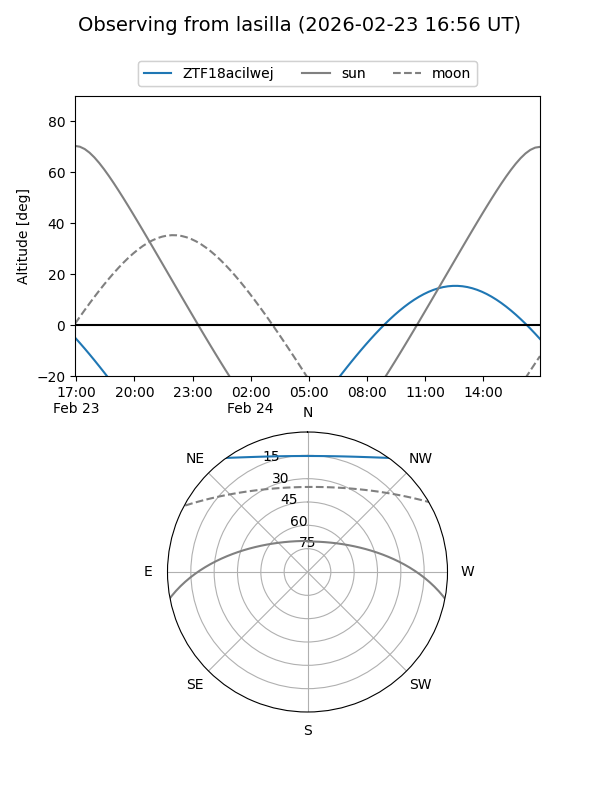
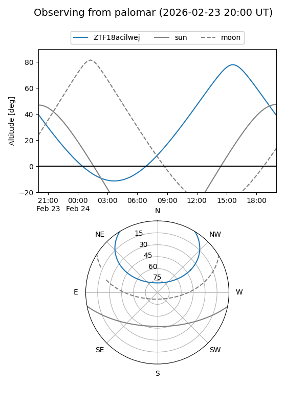

ZTF18acilwej
Target ZTF18acilwej at 2026-02-24 09:08
Aliases and brokers:
FINK: link
Lasair: link
ALeRCE: link
alt names
ZTF18acilwej (ztf,fink_ztf)
Coordinates:
equatorial (ra, dec) = 271.9912,+45.32185
equatorial (HMS+DMS) = 18:07:57.88,+45:19:18.66
galactic (l, b) = (72.5884,+26.24601)
Flags:
Photometry:
last ztfg=18.86
1 ztfg detections
Lightcurve

Visibility


Additional plots